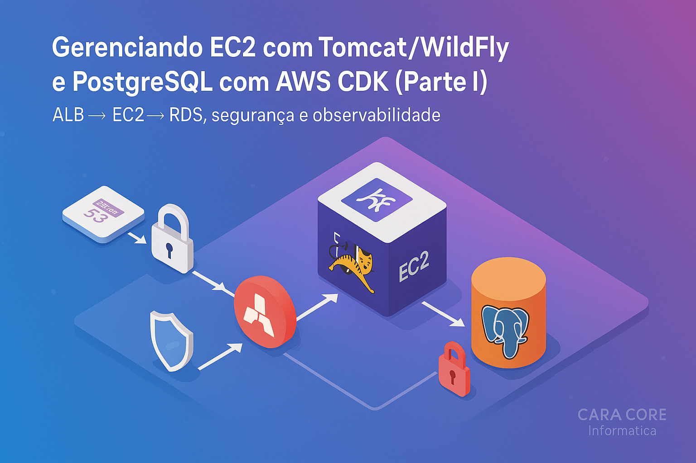

Gerenciando EC2 (Parte I) - Utilizando Tomcat/WildFly e PostgreSQL com AWS CDK
A história por trás da arquitetura: do centro às bordas
Imagine cidades de 50 a 150 mil habitantes, onde o comércio local pulsa entre entregas rápidas, estoque enxuto e rotas que mudam a cada hora. Foi nesse cenário que um pequeno consórcio de supermercados regionais decidiu construir seu próprio Hub de Varejo — uma plataforma para sincronizar preços, estoque, pedidos e logística de última milha entre as lojas e um centro regional.
O desafio? Internet intermitente, orçamento controlado e times pequenos. A solução precisava ser:
- Simples de operar em campo e robusta na nuvem.
- Compatível com o ecossistema Java (Jakarta EE), reaproveitando know-how em Tomcat/WildFly.
- Com banco relacional confiável (PostgreSQL) e plano B para conectividade.
- Gerenciada via código, auditável e com implantação por CI/CD.
A decisão arquitetural
Para reduzir variabilidade e ganhar velocidade, optamos por uma base na AWS com infraestrutura como código (IaC) usando AWS CDK em Python. O núcleo do Hub roda em EC2 com Tomcat (ou WildFly quando necessário), banco RDS PostgreSQL, e um plano de distribuição local para as lojas — caches e serviços satélites que funcionam mesmo quando o link balança.
Diagrama mental (simplificado)
- Route 53 + HTTPS (ACM) → Application Load Balancer (ALB)
- Auto Scaling Group (EC2 Amazon Linux 2023) com Tomcat 9 / Java 17 (Corretto) e Agente SSM para acesso seguro (sem abrir SSH)
- RDS PostgreSQL 15 (Multi-AZ opcional), sub-redes privadas
- Security Groups mínimos: ALB→EC2 (80/443), EC2→RDS (5432)
- Parameter Store / Secrets Manager: credenciais sem hardcode
- CloudWatch: logs + alarmes (CPU, erro 5xx no ALB)
Por que isso desperta curiosidade?
Porque deixa de ser “mais um servidor” e passa a ser um sistema vivo, onde cada mudança de código aciona uma cadeia de eventos que cria (ou ajusta) capacidade computacional automaticamente. É o momento em que tecnologia vira estratégia.
O que é o AWS CDK?
O AWS CDK permite definir e provisionar recursos na AWS usando Python. Em vez de YAML/JSON extensos, você usa classes, loops e componentes reusáveis — perfeito para times pequenos que precisam ir longe.
Estrutura do projeto (seed)
cdk init app --language pythoncara-core-informatica/
├── app.py
├── requirements.txt
└── cara_core_informatica/
└── cara_core_informatica_stack.pyProvisionando recursos com Python (visão)
- VPC com sub-redes públicas (ALB) e privadas (EC2/RDS).
- Security Groups mínimos e explícitos.
- EC2 com UserData para Tomcat/Java e CloudWatch Agent.
- RDS PostgreSQL com credenciais em Secrets Manager.
- Logs, parâmetros e segredos fora do código.
Dicionário rápido
- AWS CDK
- Cloud Development Kit — framework para definir infraestrutura como código (IaC) em linguagens como Python.
- IaC
- Infraestrutura como Código — pratica de descrever e versionar infraestrutura em arquivos de código.
- EC2
- Elastic Compute Cloud — servidores/VMs na AWS.
- ALB
- Application Load Balancer — balanceador L7 para tráfego HTTP/HTTPS.
- ASG
- Auto Scaling Group — ajusta automaticamente a quantidade de instâncias EC2.
- RDS (PostgreSQL)
- Relational Database Service — banco relacional gerenciado (ex.: PostgreSQL).
- VPC
- Virtual Private Cloud — rede virtual isolada na AWS.
- Security Group (SG)
- Firewall de nível de instância/ENI que controla o tráfego de entrada/saída.
- SSM
- AWS Systems Manager — inclui o SSM Agent, automações e o Parameter Store.
- Parameter Store / Secrets Manager
- Serviços para armazenar parâmetros e segredos fora do código.
- Route 53 / ACM
- DNS gerenciado (Route 53) e gerenciamento de certificados TLS (ACM).
- CloudWatch
- Serviço de logs, métricas e alarmes.
- UserData
- Script executado no boot das instâncias EC2 para configurar o ambiente.
Conclusão
Na Parte I, alinhamos o contexto e as decisões que sustentam um hub regional simples de operar e robusto na nuvem. Definimos domínio e TLS (Route 53/ACM), entrada com ALB, capacidade com EC2 (Tomcat/WildFly em ASG e acesso seguro via SSM), persistência com RDS PostgreSQL, limites de rede com Security Groups mínimos e observabilidade com CloudWatch. Tudo preparado para ser versionado em código com AWS CDK.
- Arquitetura enxuta e comprovada para times pequenos.
- Segurança por padrão: TLS, SG explícitos e acesso sem abrir SSH (SSM).
- Operabilidade desde o dia zero: logs e alarmes no CloudWatch.
- Infraestrutura como código com CDK: reprodutível e revisável em PR.
- Pronto para CI/CD sem chaves estáticas via OIDC (ver Parte II).
Próximo passo → Parte II: do CDK ao pipeline GitHub Actions com IAM OIDC. Se quiser trocar ideias, conecte-se no LinkedIn ou escreva para suporte@caracore.com.br.
Hashtags
Contato
- E-mail: suporte@caracore.com.br
- Site: www.caracore.com.br
- LinkedIn: Cara Core Informática
Conecte-se conosco no LinkedIn para mais conteúdos sobre desenvolvimento e inovação tecnológica!
Seguir no LinkedIn